Zennの「frontend」のフィード
フィード

【Part3】【No.015】childrenで部品を包む ― Layoutコンポーネント合成の最低限
Zennの「frontend」のフィード
みなさん、こんにちは！ペンギンエンジニアです！前回の014で、Propsの型に?を足して省略を許可し既定値で表示まで決めましたが、014までのPropsは属性に書ける「値」を渡す仕組みでした。予告どおり、今日は部品をタグで挟んで中身ごと渡す話 ― childrenをやります。childrenは特別な仕組みに見えますが、種明かしをすると、これもただのpropです。012「ただの関数」、013「ただの引数」に続けて、今日は「childrenはただのprop」で締めくくります。筆者はSES現場の保守案件で、同じ枠のコピペが画面ごとに散らばり全画面を直した経験があり、今日作るCard...
15時間前
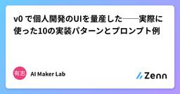
v0 で個人開発のUIを量産した──実際に使った10の実装パターンとプロンプト例
Zennの「frontend」のフィード
v0 by Vercel を使い始めて3ヶ月、個人開発で実際に「何度も使う」パターンが固まってきた。この記事ではプロンプトをそのまま使える10種類の実装パターンを整理する。難度の目安入門：プロンプト1〜2回で完成、Freeプランで余裕実践：3〜5回の反復、Teamプラン向き応用：複数画面・状態管理・外部API込み、Cursor / Claude Codeとの併用推奨 パターン1：ヒーローセクション付きLP（入門）最頻出。サービス紹介・個人開発のリリース告知に。ヒーローセクション付きランディングページ。- 上部にタイトル「AI Maker Lab」と1行サブタイトル...
16時間前
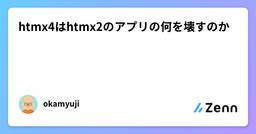
htmx4はhtmx2のアプリの何を壊すのか
Zennの「frontend」のフィード
2026年8月28日にhtmx 4.0.0が公開されました。CodeZineのニュースにもあるとおり、公式は「ユーザーから見ると2系とほぼ同じ」と説明しています。本当にそうなのかを、自分で書いたhtmx2のアプリを4.0.0へ上げて確かめてみました。題材はSlackの骨格は何か - チャットと連携ハブをGoとhtmxで再実装するで作ったチャットアプリです。WebSocketでHTMLの断片を配信し、hx-swap-oobで画面に差し込み、送信フォームでは冪等キーを採番しています。htmx4での改修項目にぴったり一致しているので、題材として非常に適合する構成になっています。公開時点のアプ...
17時間前
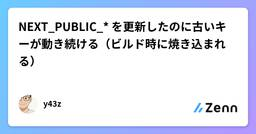
NEXT_PUBLIC_* を更新したのに古いキーが動き続ける（ビルド時に焼き込まれる）
Zennの「frontend」のフィード
外部 SDK のライセンスキーに失効日が設定されていて、期限までに新しいキーへ入れ替える必要がありました。環境変数を更新して、動作確認して、大丈夫だと思ったら、本番はまだ古いキーで動いていました。NEXT_PUBLIC_* の性質を分かっていなかったのが原因です。同じところで 2 回はまったので、書いておきます。 何が起きたか構成はこうです。Next.js のアプリが 3 つ。ブラウザ側で動く SDK のライセンスキーを共用しているキーは NEXT_PUBLIC_SDK_LICENSE_KEY として、各アプリの環境変数に入っているホスティングは Vercelキーの失...
21時間前

仕様と実装を同じ言葉で書く ― 責務を機械的に突合し検証し続けるフロントエンド開発（要件定義〜実装・テスト）
Zennの「frontend」のフィード
!3行まとめこれまで別記事でフロントエンドコンポーネントの責務をSubject Object Verbで整理して名付けるといいよという話をしてきました。この記事では、同じ語彙を要件定義から使うと、同じ語彙で一貫して開発ができ、要件の検討漏れや実装の抜け漏れが少なくなるという提案をしています。ymlやアノテーションを活用することで、静的に解析ができ、CIでのチェックやAIの品質ゲートにもできて嬉しいよ、と主張していますフロントエンドの仕様書と実装コードは、ふつう別の言葉で書かれています。つまり仕様は日本語のExcelやドキュメントで、実装はコードになっています。だから両者の...
1日前
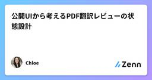
公開UIから考えるPDF翻訳レビューの状態設計
Zennの「frontend」のフィード
公開UIから考えた設計メモです。内部実装や性能は確認していません。 状態として見るアップロード、処理中、確認、書き出しは別の意味を持ちます。 契約Blockedでは警告を読め、Reviewでは再処理しても前の結果が失われないことが契約です。PDFTranslator.ai は公開エントリーです。 PDF Translator を評価するときは入力種別、警告、確認手順を質問にします。 テスト画像ページでOCR注意が表示される長い表で列を確認できる失敗後もレビュー結果が残る
1日前
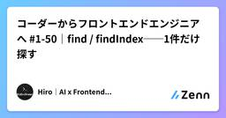
コーダーからフロントエンドエンジニアへ #1-50｜find / findIndex──1件だけ探す
Zennの「frontend」のフィード
はじめに前回 filter の最後に、こんな書き方を「動くけれど適切ではない」として紹介しました。const user = users.filter((u) => u.id === 2)[0];1件だけほしいのに全件を走査し、返ってきた配列からわざわざ [0] を取り出す。今回学ぶ find は、まさにこの用途のために用意されたメソッドです。const users = [ { id: 1, name: "田中" }, { id: 2, name: "鈴木" }, { id: 3, name: "佐藤" },];const foundUser = use...
1日前
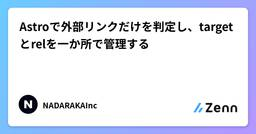
Astroで外部リンクだけを判定し、targetとrelを一か所で管理する
Zennの「frontend」のフィード
Astroでコーポレートサイトを作ると、ヘッダー、記事本文、会社情報など、さまざまな場所にリンクが増えていきます。内部リンクは同じタブで開き、外部リンクだけを新しいタブで開く方針にしていても、各ページでtarget="_blank"とrelを手作業で追加すると漏れが起きます。URLの文字列にドメインが含まれるかどうかで判定すると、サブドメインや相対URLの扱いも曖昧になります。そこで、Astroのsite設定と標準のURL APIを使い、リンク先のoriginを比較するコンポーネントへまとめます。この記事では、次のリンクを区別します。/aboutや#contactは内部リンク...
1日前
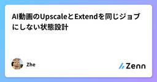
AI動画のUpscaleとExtendを同じジョブにしない状態設計
Zennの「frontend」のフィード
問題設定解像度を上げたい場合と、時間方向に続きを作りたい場合は混ぜやすい。公開UIを見ると、PhotoGenerator AI には倍率やフレーム補間を選ぶ Upscale Video と、短い動画を長くする Extend Video がある。 判別可能な型type UpscaleJob = { kind: "upscale"; factor: 1 | 2 | 3 | 4; interpolation: "original" | "30fps" | "60fps";};type ExtendJob = { kind: "extend"; continu...
2日前
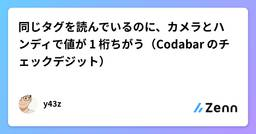
同じタグを読んでいるのに、カメラとハンディで値が 1 桁ちがう（Codabar のチェックデジット）
Zennの「frontend」のフィード
工場の業務システムで、バーコードの読み取り口を 2 つ用意しました。据え置きの業務用ハンディスキャナ（HID モード）と、タブレットのカメラ（Scandit SDK）です。同じ物理タグを読ませているのに、アプリに入ってくる値が違いました。ハンディスキャナ: 41312673（8 桁）カメラ: 413126731（9 桁）末尾に 1 桁多い。これはチェックデジットでした。 何が起きているか現場のタグは NW7（Codabar）で、「データ + チェックデジット」の形で印字されています。チェックデジットはモジュラス 10 / ウェイト 3。JAN や EAN で使われているの...
2日前
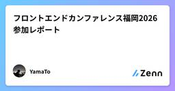
フロントエンドカンファレンス福岡2026 参加レポート
Zennの「frontend」のフィード
はじめに9月12日に福岡県の九州産業大学 12号館にて開催された「Frontend Conference Fukuoka 2026」に参加してきました。本記事では、参加するに至った経緯や聴講したセッションの中で印象的だったものをいくつかピックして感想を述べます。 参加経緯実務でフロントエンド側の開発を始めて、約1年半になろうとしています。少人数で複数のアプリケーションの運用開発をしていることもあり、バグ改修や機能追加だけでなく、フレームワーク・ライブラリのメジャーアップデートや刷新、リファクタリングなど様々な経験を積んできました。今後は、0からアプリを設計・構築すると...
2日前
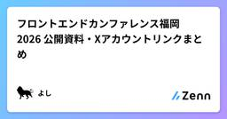
フロントエンドカンファレンス福岡 2026 公開資料・Xアカウントリンクまとめ 4
4
Zennの「frontend」のフィード
2026/09/12(土)で開催されたフロントエンドカンファレンス福岡 2026に関する、現時点での公開資料と X アカウントリンクをまとめました。よろしければご活用ください。!この記事は、個人ブログへ投稿した記事の転載です。 はじめにhttps://frontend-conf.fukuoka.jp/2026登壇者名は敬称略させていただいています。スライドについては、ご本人がツイートで展開されていたり、スライドサービスにアップロードされているものを記載。X アカウントについては、資料に記載されていたり、資料公開の投稿で分かった方のみ記載。リンクの間違い等ありましたら...
2日前
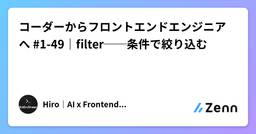
コーダーからフロントエンドエンジニアへ #1-49｜filter──条件で絞り込む
Zennの「frontend」のフィード
はじめに前回は map のつまずきを5つ潰しました。map は「3件入れたら3件返る」1対1の変換でしたね。今回の filter は、そこが決定的に違います。条件に合う要素だけを残すので、件数そのものが変わります。const numbers = [1, 2, 3, 4, 5];const evens = numbers.filter((number) => number % 2 === 0);console.log(evens); // [2, 4]5件が2件になりました。商品一覧の絞り込み、検索結果、未完了タスクだけの表示──画面に出てくる「絞り込み」は、ほぼ...
3日前

最後に届いた応答は、最新とは限らない：非同期UIを世代番号で守る
Zennの「frontend」のフィード
一覧でAを選び、すぐにBへ切り替える。Bの情報が表示されたあと、遅れて届いたAの応答が画面を上書きする。通信そのものは成功していても、利用者は間違った対象の情報を見ることになります。残高や履歴を見せるWeb3のUIでも、一般的な検索画面でも起こり得る問題です。本稿ではネットワークを使わず、応答順序を手動で逆転させるテストで、対策の中心となる考え方を確かめます。 「最後に開始した操作」だけに表示を許可する表示の権利を応答の到着順に渡さず、リクエストを開始するときに番号を付けます。結果を反映する直前に、まだ最新の番号かを確認します。次のコードをlatest.mjsへ保存してください...
3日前
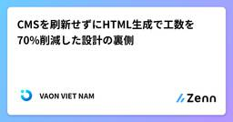
CMSを刷新せずにHTML生成で工数を70%削減した設計の裏側
Zennの「frontend」のフィード
20年以上稼働しているCMSがありました。今回のプロジェクトでは、これを刷新できません。予算とスコープの外にあり、それ以上に、お客様側の運用チームが日々そのCMSで業務を回しています。そこで取った方針は、CMSに手を触れず、CMSが受け取れる形のHTMLを自動で生成することでした。この記事は、その変換処理をどう設計したか、そして正直なところ何を解決していないのかの記録です。対象は食品メーカー様のWebサイトリニューアルで、期間4か月、14名体制。私たちの担当は開発・テスト・リリースで、UI/UX設計は担当範囲外でした。 工数はどこに溜まっていたのか稼働中のCMSは、表示と内容が...
3日前
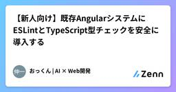
【新人向け】既存AngularシステムにESLintとTypeScript型チェックを安全に導入する
Zennの「frontend」のフィード
はじめに既存のAngularシステムを保守していると、少しずつ次のような問題が増えてきます。未使用のimportや変数が残るanyが増えるnullやundefinedへの考慮が不足するAPIレスポンスの型が曖昧になるリファクタリング時に修正漏れが起きるテンプレート側の型エラーに気付きにくいコンポーネントに処理が集中するこうした問題を早めに見つけるために、フロントエンドにも静的解析を導入します。この記事では、既存のAngularシステムに対して、ESLintangular-eslintTypeScriptの型チェックAngular Template...
3日前

連続ラベル用紙に合わせるまで 6 コミットかかった話（react-pdf の格子とオフセット）
Zennの「frontend」のフィード
工場で使うバーコードラベルを、ドットインパクトプリンタの連続用紙に印字する機能を作りました。1 枚の紙に何列何段のラベルが並んでいて、それぞれの位置にきれいに刷る、というだけの仕事です。実装は @react-pdf/renderer で PDF を作るだけ。難しいことは何もありません。それでも、現物に合うまで 6 回作り直しました。全部「紙の実寸が想定と違った」たぐいの話です。 コミットの履歴作り直しの履歴がそのまま残っているので、並べます。① 連続ラベル用紙（11×10 インチ、3列×15段）に合わせて配置を作り直し② 用紙横幅を 8 インチに修正（3列×15段、列ピッチ ...
3日前

TypeScript 7は10倍速いらしいが、乗り換えをまだ決めきれていない
Zennの「frontend」のフィード
TypeScript 7の公式ブログには、VS Code本体のフルビルドが125.7秒から10.6秒になった、という数字が載っています。公式の言い方ではフルビルドで8倍から12倍で、世間でよく見る「10倍」はそのあたりを丸めた数字のようです。[1]速くなるのは良いことです。ただ、同じ記事を最後まで読むと、乗り換えの話はもう少し込み入っていました。 何が変わったのかTypeScript 7の最大の変更は、コンパイラの実装をJavaScriptからGoへ書き直したことです。これまでのTypeScriptは、TypeScript自身で書かれ、ブートストラップでJavaScriptへコン...
4日前

コーダーからフロントエンドエンジニアへ #1-48｜map のつまずき──return忘れと第2引数
Zennの「frontend」のフィード
はじめに前回、map は「配列の各要素を変換して、新しい配列を返す」メソッドだと学びました。書き方はシンプルです。それなのに、いざ自分で書き始めると多くの人が同じ場所で転びます。console.log(result); // [undefined, undefined, undefined]変換したはずの配列が、undefined で埋まって返ってくる。しかもエラーは一切出ない。これが map の最初の壁です。原因はほぼ決まっています。今回はつまずきポイントを5つ、まとめて潰しておきましょう。どれも一度知れば二度と引っかからない種類のものです。 つまずき①：波カッコを書い...
4日前

TypeScriptのasを減らす：satisfiesとの使い分けを実例で整理する
Zennの「frontend」のフィード
TypeScriptを書いていると、型エラーを消すために as を使いたくなる場面があります。ただし、as は便利な一方で、使い方によってはTypeScriptの型チェックを自分で弱めてしまいます。一方、TypeScript 4.9で追加された satisfies は、「この値が指定した型を満たしているかチェックする」一方で、元の具体的な型推論をできるだけ維持するための演算子です。この記事では、as、型注釈、satisfies、as const の違いを、実務で使いやすい形で整理します。 先に結論迷ったときは、だいたい次の順番で考えると安全です。まずはTypeScript...
4日前